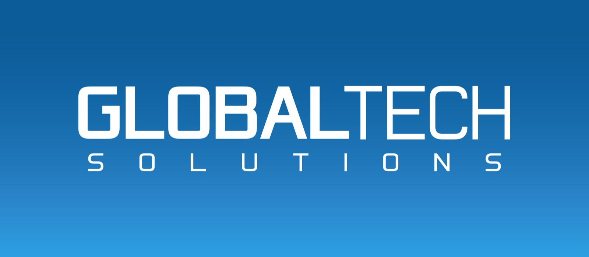
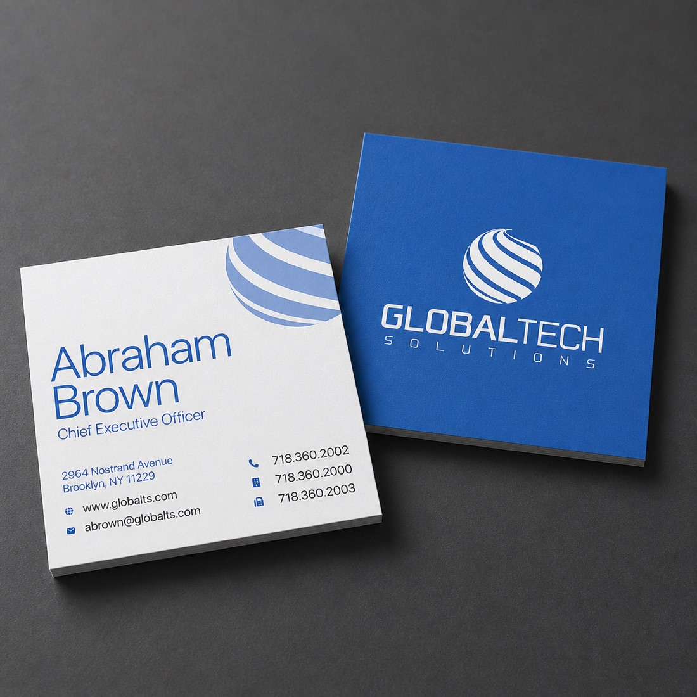
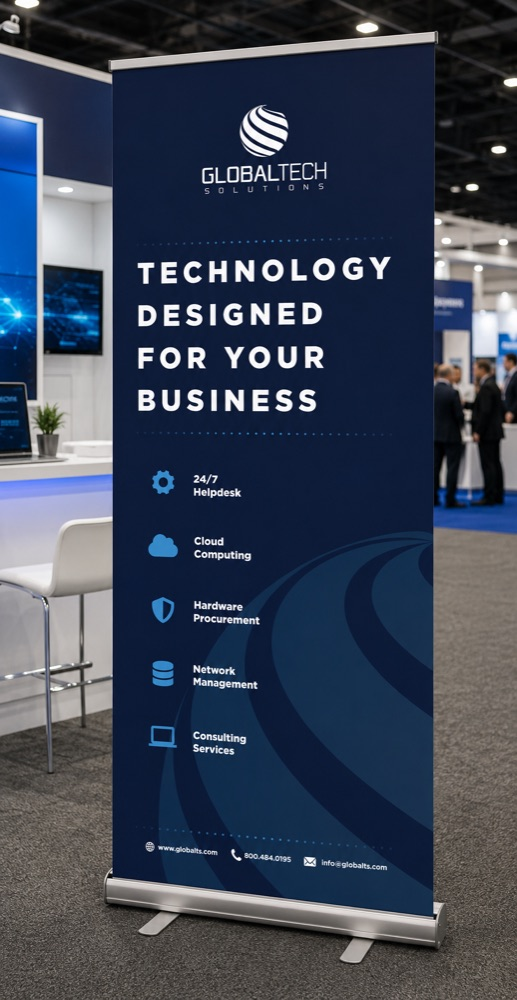

global tech
The refreshed mark: the old flat line-art globe redrawn as a banked, gradient wave — a rounder, more dimensional take that still drops cleanly to a single color for a favicon.
Technology, designed for your business

Wordmark set on the brand's gradient field, built as a full-bleed cover for social and print.

Stationery system: mark and wordmark on the reverse, contact details set plain on the front.

Retractable banner for the booth floor: services list stacked under the mark, contact info anchored at the base.
Sponsor graphic for ECAP 23: the mark holds up against a photo background as easily as a flat one.